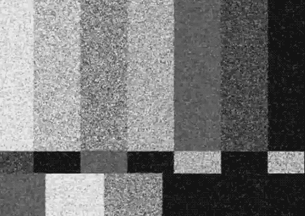
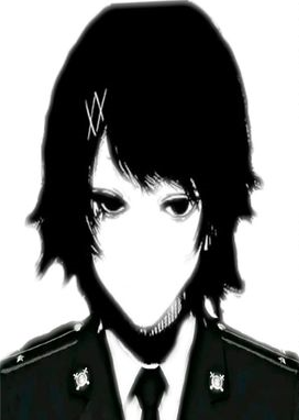

Música

Besteira.
Eram cinco da tarde. O céu, encoberto por nuvens espessas e cinzentas, parecia carregar o peso de uma melancolia habitual, o tipo de cenário em que o sol, mais uma vez, decide não dar as caras, à maneira de alguém exausto de narrar histórias para um mundo que parou de escutá-las. Tudo apontava para mais um daqueles dias longos e absurdamente chuvosos.
"Será que eu deveria ir ao mercado?" Pensei. Mas será que preciso mesmo comprar algo agora? Ok, admito, estou com uma fominha, mas nada urgente. Só que, quer saber? Foda-se. Ficar aqui definindo o que é urgente ou não enquanto o estômago resmunga não vai me levar a lugar nenhum.
Além do mais, sair pra comprar alguma coisinha ainda é melhor do que continuar vegetando por aqui e, de quebra, morrer de fome. Uma morte dessas seria bem patética, convenhamos.Levantei da cama com a solenidade de quem está prestes a tomar uma decisão grandiosa (quando, na verdade, tudo o que eu ia fazer era encarar a rua). Dei uma leve espreguiçada, torcendo pra que nenhuma parte do meu corpo resolvesse trincar no processo — meu estado atual de sedentarismo, diga-se de passagem, não é dos mais orgulhosos. Não sei explicar... tem sido difícil encontrar ânimo pra qualquer coisa nessa merda.
Puxei a primeira roupa que avistei no armário, completamente bagunçado, e saí. Sem rumo muito certo, apenas guiada pela fome e por uma necessidade instintiva de movimento.
Enquanto caminhava, fechei os olhos por um momento. A chuva fina tocava meu rosto, e a brisa fria me envolvia com um certo carinho indiferente, do tipo que não se importa se você está bem, mas ainda assim te acolhe. Pode soar estranho, eu sei, mas eu gosto de caminhar sob a chuva. Me faz sentir algo. E sentir, por mais banal que pareça, tem sido um privilégio raro ultimamente.
Fui arrancada desse pequeno transe sensorial pelo som de uma buzina, que começou a crescer como uma sirene de alerta. Instintivamente, abri os olhos e dei alguns passos para trás.
"Olha por onde anda, idiota!"Mais uma daquelas frases prontas, lançadas com raiva automática por estranhos impacientes e que, convenhamos, eu já ouvi tantas vezes que até perdi a conta. Isso sempre acontece quando eu me desatento.
Pra completar a experiência maravilhosa, o carro que passou logo em seguida não só manteve a pressa, como teve a gentileza de acelerar bem em cima de uma poça d’água. O impacto da água foi certeiro: jato direto nas minhas roupas, no rosto, nos pensamentos. Uma ducha involuntária, fria e irritante.
Maravilha.
Se eu não pegar uma gripe depois disso, é milagre.
Cheguei em casa com as compras ensopadas nas mãos, o corpo encharcado e o humor igualmente molhado. Coloquei as sacolas sobre a mesa com um cuidado automático, na ilusão de que ainda restasse algum resquício de gentileza dentro de mim, apesar da cidade parecer SUPER bem empenhada em espremê-la inteira. Olhei ao redor da sala. Tudo ali parecia tão imóvel, tão silenciosamente cúmplice do meu cansaço. Suspirei fundo, daqueles suspiros que vêm do estômago, num gesto de quem acha que respirar mais fundo fosse resolver alguma coisa.
Mas não deu nem tempo de terminar esse pequeno momento de miséria performática. Um som de vibração, baixo porém persistente, interrompeu o silêncio. Era o meu celular. Eu o havia deixado repousando, praticamente esquecido, no braço do sofá antes de sair. A tela piscava discretamente, quase implorando para ser levado a sério.
"Quem será agora?", pensei, com aquela típica mistura de desinteresse e esperança.

Ugh... era a Ashley. Minha amiga de colégio e, como sempre, absolutamente empenhada em salvar o mundo com um convite para algum rolê. Ela tinha planejado mais uma daquelas saídas com o nosso grupo, com os mesmos insuportáveis de sempre, e claro que eu, prevendo o desgaste social, inventei uma desculpa qualquer pra não ir. Algo vago o suficiente pra parecer plausível e, ao mesmo tempo, definitivo. Achei que seria irrelevante me juntar àquela bagunça coletiva. Só que... honestamente? Considerando o estado de apatia em que me encontro ultimamente, talvez tenha sido uma péssima decisão.
A Ashley sempre foi o motor do grupo, aquele tipo raro de pessoa que irradia energia num brilho que lembrava um sol particular dentro do peito. O carisma dela é tão contagiante que, em poucos minutos, até desconhecidos viram parte da roda. Enquanto fico andando por aí, me desmanchando em silêncio e evitando contatos visuais, ela constrói pontes sociais sem parecer sequer se esforçar. E, como se já não bastasse, parece que essa energia toda fica maior ainda sempre que ela está perto de mim. Talvez seja paranoia minha, ou talvez ela tenha, de fato, notado que eu não estou bem. E, sinceramente, não sei o que me intriga mais: o fato de ela perceber, ou o fato de se importar.
Mas talvez eu esteja mesmo ficando meio maluca. E talvez, só talvez, seja a hora de parar de me esconder atrás de desculpas esfarrapadas.
Suspiro.
Tá, vou responder. Que saco.
Acho que a essa altura já deu pra sacar muito bem de quem eu estava falando. E, sinceramente, também já deu pra perceber que talvez tenha sido um erro responder. Azar o meu, e dela também, talvez. Vai ver, azar nosso.
Você provavelmente está pensando que eu simplesmente não gosto dos meus amigos, que quero distância de todo mundo e que sou mais uma dessas criaturas antissociais que se acham superiores porque evitam aglomerações emocionais. Mas não, não é exatamente isso. Ou pelo menos não do jeito que parece. Talvez eu só esteja tentando ser "fria"... e falhando miseravelmente. É o que eles dizem de mim, afinal. Vivem repetindo que eu ajo como se não me importasse, como se fosse feita de pedra. E depois ainda acham graça disso, parecendo até uma performance. Eu só não sei mais como mostrar que ainda me importo.
Deixei o celular cair de forma displicente no sofá e fui até as sacolas de compras. Lá estavam as lasanhas que comprei sem muito critério, movida por um impulso automático de conforto. Ia dar pro jantar, talvez até pra mais de uma refeição, considerando minha disposição pra cozinhar nos últimos tempos. E sim, eu gosto de lasanha. Gosto muito. A ponto de imaginar, mesmo que por um segundo, nadar numa piscina cheia delas. Ridículo, eu sei. Pensamento bobo, talvez até infantil. Mas às vezes esses delírios tolos são os únicos capazes de arrancar um esboço de sorriso.
Peguei uma das embalagens, rasguei o plástico com a unha e coloquei no micro-ondas. Regulei o tempo com uma precisão robótica. Enquanto isso, a televisão, que eu havia ligado por inércia, exalava aquele som familiar da estática, um chiado constante, reconfortante. Uma trilha sonora acidental para um momento de nada. Me sentei no tapete, cruzando as pernas como quando eu era criança, e deixei o olhar se perder na tela sem imagem.
A estática parecia conversar comigo de algum jeito estranho, sussurrando: “tá tudo bem não estar bem”. E eu acreditei, só por um instante.
bzzzzzzzzzzzzzzzzzzzzzz..O som do micro-ondas se uniu ao da TV, criando uma harmonia esquisita entre dois eletrodomésticos que, por algum motivo, entendiam mais de mim do que qualquer pessoa. Eu até pensei em mudar de canal. Ver qualquer outra coisa: notícias, série, até propaganda de colchão. Mas a verdade? A verdade é que minha vontade de fazer isso era nula. ̶m̶e̶n̶t̶i̶r̶a̶,̶ ̶i̶s̶s̶o̶ ̶n̶a̶ ̶v̶e̶r̶d̶a̶d̶e̶ ̶é̶ ̶t̶u̶d̶o̶ ̶a̶p̶e̶n̶a̶s̶ ̶u̶m̶a̶ ̶d̶e̶s̶c̶u̶l̶p̶a̶ ̶p̶r̶a̶ ̶n̶ã̶o̶ ̶f̶a̶l̶a̶r̶ ̶q̶u̶e̶ ̶e̶u̶ ̶t̶e̶n̶h̶o̶ ̶p̶r̶e̶g̶u̶i̶ç̶a̶
Com uma lentidão digna de quem está em guerra com a própria vontade, eu me levantei do sofá e arrastei meu corpo até a cozinha para verificar o andamento da tão aguardada lasanha. E, olha... só de olhar já me dava um nervoso bom. Aquela camada dourada começando a borbulhar, o cheiro invadindo o ambiente como uma promessa de redenção, meu estômago, coitado, já se retorcia em agonia, roncando feito alguém abandonado por dias num deserto. A visão era quase poética. Quase.
— Eu tô com foooooomeeeeeeeeeeeeeeeeee! — exclamei, jogando os braços para trás como uma criança birrenta e me largando no chão da cozinha com uma teatralidade estudada, encenando um olhar manhoso em direção ao micro-ondas. — Eu quero lasanhaaaaaaaaaaaaaaaaaaaa!
Sim, eu fiz isso. Por vontade própria. Não me orgulho, mas também não me arrependo. Estava sozinha, então me permiti esse pequeno surto performático. E, por favor, guarda isso entre a gente. Nada de espalhar, ok?
Ding dong! Ding dong! Ding dong! Ding dong! Ding dong! Ding dong!A campainha começou a tocar, não apenas tocar, mas martelar com uma urgência que beirava o desespero. Cada toque parecia mais desesperado que o anterior, numa urgência de quem estava à beira de um colapso ou, sei lá, prestes a desabar ali mesmo. Imediatamente, uma sensação desagradável começou a se espalhar pelo meu peito.
Levantei devagar, hesitante, como quem não quer chegar onde precisa. Meus pés iam arrastados, e minha mão tremia sutilmente. Eu não estava esperando ninguém. E, convenhamos, quando alguém toca uma campainha daquele jeito às oito da noite de uma terça-feira chuvosa, dificilmente é o entregador da felicidade.
A cada passo que eu dava em direção à porta, os toques se tornavam mais frenéticos. Feito um instinto selvagem, parecia adivinhar minha presença pelo outro lado. Era animal. Quase... faminto.
— ..Quem é? — perguntei, tentando soar firme, mas minha voz saiu baixa, meio trêmula, num tom que mal desejava ser ouvido.
Silêncio.
A campainha parou abruptamente. A única coisa que preencheu o vazio que se seguiu foi o som da estática da televisão, ainda ligada no canal vazio, como um sussurro mecânico pairando no ar. A sensação era sufocante. Minha mente, sempre muito criativa quando se trata de imaginar o pior, tratou de gerar um catálogo completo de hipóteses catastróficas: um assaltante? Um lunático? Alguém que me confundiu com outra pessoa? Um espírito? Ok, essa última foi demais, mas você entendeu.
Bip!!!Um som agudo e curto cortou o clima de tensão. Instintivamente, virei o corpo para trás. Era o micro-ondas. A lasanha estava pronta.
— Ugh, que vergonha... — murmurei pra mim mesma, rindo sem graça do susto patético que tinha levado.
Meu coração, que já estava tentando fugir do peito, agora batia mais devagar, embora ainda envergonhado. Era só comida. Comida salvando vidas, como sempre.
Abri o micro-ondas com a cautela de quem lida com algo sagrado. Retirei a lasanha com cuidado, tentando não me queimar, e a coloquei no prato. O cheiro era quase reconfortante o suficiente pra quase me fazer esquecer da visita inesperada.
Em seguida, eu...
— PORRA, MINHA MÃO! AAAAAAAAAAAAAAAAH! QUE DORRRRR! — Gritei, segurando os três dedos centrais da mão esquerda com a outra, tentando conter o ardor lancinante que já começava a deixar minha pele vermelha como brasa viva. — POR QUE EU NÃO VESTI LUVAS?? AAAAIIIII! MISKA, SUA IDIOTA!
Aquela dor absurda me deixava fora de mim, e por um momento pensei que fosse desmaiar. Mas a adrenalina me manteve de pé, ou melhor, me empurrou até o sofá, quando ouvi o toque do celular rompendo o caos. No meio da aflição, sem raciocinar, fui verificar quem estava ligando.
Número desconhecido. Nunca vi na vida. Provavelmente cobrança, ou algum infeliz tentando passar trote.
Sem paciência pra mistério barato, desliguei sem pensar duas vezes. Não era hora de lidar com desconhecidos, eu mal conseguia lidar comigo mesma. Com os dedos latejando e a queimadura começando a pulsar, num ritmo que parecia ter vida própria, fui direto ao banheiro procurar alguma faixa ou gaze.
— Ugh, usar luvas da próxima vez. Parabéns pela genialidade. — murmurei para mim mesma enquanto enfaixava os três dedos, um por um, tentando manter a calma. — Sim, Miska, bela lição de casa.
Com os dedos finalmente protegidos, saí do banheiro e desci as escadas em direção à cozinha. A lasanha provavelmente já tinha esfriado, e tudo o que eu queria era um pouco de comida e paz. Talvez até um analgésico.
O som de chamada de seu celular começa a ecoar novamente.— Ah, qual é agora? — resmunguei, irritada, enquanto caminhava até o aparelho. O mesmo número.
O mesmo número.
— Merda, eu já disse que eu não sei quem diabos isso é, para de encher o saco. — bufei, já me preparando para mais uma dose de frustração.
Determinada a acabar com essa palhaçada, atendi a chamada estranha. O outro lado da linha optou por não se apresentar, então resolvi tomar a iniciativa:
— Alô? — Eu digo, esperando imediatamente uma resposta.
Silêncio.Esperei. Um minuto. Dois. Oito. O tempo parecia se arrastar de propósito, e a ligação continuava muda.
— Hum... Alôôô!? — insisti, agora com a voz mais firme, meio irritada, meio desconfiada. Comecei a raciocinar o óbvio: trotes estúpidos. — Olha, seja lá quem for você, para com essa porra, tá? Vai encher o saco de outro.
Revirei os olhos, pronta pra encerrar a palhaçada, quando finalmente uma resposta veio — uma voz distorcida, metálica, quase robótica, claramente manipulada por um modificador de voz:
"Se desligar esse telefone, eu te corto em pedaços."
A ameaça ecoou pela linha com a frieza de uma lâmina encostando na pele. Foi o suficiente para que meu dedo congelasse no botão de encerrar chamada, e junto com ele, todo o meu corpo. O medo me paralisou de dentro pra fora, dando a sensação de que o ar tivesse deixado meus pulmões.
Minha mão tremia descontroladamente, mas mesmo assim tentei reunir o que restava de compostura. Ainda havia, em algum canto de mim, um resquício de coragem não corroído pelo pânico.
— E-escuta aqui, seu filho da puta... eu nem sei quem é você, mas se não me deixar em paz, eu juro que vou chamar a polícia! — gritei, mas a minha voz saiu trêmula, fraca, falhando no meio das palavras. E eu sabia: era exatamente isso que ele queria ouvir.
Silêncio.
Mas não era um silêncio comum. Era denso, sufocante. Tomou conta da casa como uma névoa invisível, carregada de tensão. Tentei respirar fundo para acalmar os batimentos acelerados, mas a sensação era de que o ar ali dentro havia endurecido.
Foi então que tudo se desmoronou.
TOC. TOC.Duas batidas fortes na porta da frente. Secas. Diretas. O tipo de som que faz o estômago virar.
Na terceira batida, não houve mais sutileza: o que quer que estivesse do outro lado se lançou com violência contra a porta, arrebentando-a em um estalo brutal. Madeira estilhaçada voou pelo corredor como estilhaços de granada.
O invasor entrou. Um homem. Devia estar na casa dos cinquenta anos. Corpo robusto, roupas sujas e rasgadas que lembravam as de um jardineiro, só que tingidas em respingos e manchas de sangue seco. Na mão, um machado de ferro escurecido pelo tempo e pelo uso. Na lâmina, pedaços de algo que eu me recusei a identificar. Talvez não fosse a primeira casa.
Meu celular escorregou da minha mão, caindo no chão com um impacto surdo. Eu estava paralisada. O olhar dele era insano, opressor, acompanhado de um sorriso largo, aberto demais, numa distorção que traía a sanidade. Ele me observava como um predador saboreando o terror da presa antes do ataque.
— M-Mas... q-que porra...? — foi o máximo que consegui murmurar, com a voz embargada.
Não tive tempo pra pensar.
Ele avançou de súbito, num movimento brutal, empunhando o machado com ambas as mãos. Instintivamente, recuei três passos e, no impulso, saltei para o lado. A lâmina passou rente a mim, acertando em cheio o micro-ondas que explodiu em faíscas e estilhaços, a lasanha voou pelos ares e grudou grotescamente na cabeça do machado, como uma ironia macabra.
Aproveitei a distração para tentar correr em direção às escadas. Mas, no desespero, tropecei no tapete da sala e torci o tornozelo com um estalo seco. Gritei, caindo no chão com a dor latejando forte, sufocante. Antes que eu pudesse rastejar, ele se aproximou com a calma de quem sabe que venceu.
Uma das mãos dele agarrou meu pescoço e apertou com força brutal. A pressão aumentava e minha visão começou a borrar. O mundo girava. O som ao redor se distorcia. Meus dedos tentavam, em vão, afrouxar a mão que me esmagava.
Por um instante — um único lapso de sorte no meio do caos —, enquanto ele me erguia pelo pescoço, meus dedos tocaram algo frio no chão. Era um estilhaço metálico, parte do micro-ondas destruído. Num impulso desesperado, agarrei o pedaço com força e, reunindo toda a energia que ainda me restava, cravei-o contra a lateral da cabeça do homem.
O impacto fez um som seco e abafado. Ele cambaleou, grogue, soltando um grunhido rouco enquanto perdia o equilíbrio por um segundo. Foi o suficiente. A chance que eu precisava, talvez a única.
Sem pensar duas vezes, me arrastei para longe, mancando, ignorando a dor latejante no tornozelo. Subi as escadas com esforço, impulsionada pelo puro instinto de sobrevivência, e corri direto para o meu quarto. Assim que entrei, bati a porta com força, tranquei a maçaneta e pressionei meu corpo contra ela como uma barreira viva.
Mas ele não demorou.
Poucos segundos depois, senti o impacto do peso dele do outro lado. O maldito estava tentando arrombar a porta usando o próprio corpo, e com o ritmo das investidas, percebi rápido que não conseguiria segurá-lo por muito tempo sozinha. A estrutura da porta tremia a cada nova batida, e meu coração acompanhava o ritmo, disparado.
Então veio o machado.
A lâmina atravessou a madeira com brutalidade, abrindo um buraco a poucos centímetros do meu rosto. Lasca de madeira voaram, e eu me joguei para o lado, ofegante.
"Vamo lá, Miska, do que tá se escondendo?"
Aquilo me congelou. Como ele... sabia meu nome? O pânico deu lugar a uma onda de confusão inquietante. Era um stalker? Um psicopata que vinha me observando? Cada possibilidade era pior que a anterior.
Antes que eu pudesse raciocinar direito, ele deu um chute com força total, arrebentando a porta e me lançando para trás, contra a cama. O impacto foi brutal, e uma dor aguda percorreu minha coluna. Senti meu corpo apagar por um instante. Tentei me mexer, mas era como se meus membros tivessem esquecido como funcionar.
Ele entrou no quarto lentamente. Cada passo dele parecia ressoar dentro do meu peito. O machado gotejava algum líquido escuro, sangue, talvez. A sombra dele se projetava sobre mim, como um presságio do fim.
É, esse era o meu fim.
Fechei os olhos, tentando me preparar para o inevitável.
"Sempre paspalha, não é?"
Sua voz mudou. Não era a mesma de antes, havia um tom irônico, quase familiar, num deboche claro.
— Hã? — murmurei, abrindo um olho, confusa, ainda em posição de defesa, mesmo sabendo que era inútil.
Foi quando vi.
Ele levou uma das mãos ao próprio rosto e começou a puxar. Não a pele, mas uma máscara. Uma máscara grotesca, colada como uma segunda pele. Meus olhos se arregalaram, tentando compreender o que estava acontecendo.
Então aquilo era uma máscara?
Quem.. quem é que tá por trás de...?
Ah, mas nem fodendo.
— Boooooo! — a voz familiar rompeu o silêncio como uma explosão. E então, puxando a máscara grotesca como quem revela o último truque de um espetáculo, Ashley apareceu, com aquele sorriso travesso e os olhos brilhando de malícia. — Te assustei, foi?
Ela ainda fez um som idiota com a língua, numa encenação barata digna de show de quinta.
— Ma.. U-u.. Que que..? — As palavras tropeçavam na minha boca, saindo como fragmentos desconexos. Minha mente era um borrão — como quem acorda de um pesadelo só pra descobrir que a realidade era igualmente absurda.
Então tudo aquilo... aquela invasão, o machado, a quase morte eram uma simples... PIADA?
Ashley gargalhava agora sem nenhum pudor, curvada, quase chorando de tanto rir.
— Sua cara de confusão é sempre a melhor, hahahahaha! — Ela limpava uma lágrima de tanto rir, segurando a barriga.
Observei a cena, respirei fundo e... sorri. Um daqueles sorrisos que misturam alívio com resignação e um toque de: "eu devia saber."
Me aproximei dela, ainda trêmula do susto, mas agora rindo também — aquela risada nervosa que escapa quando o corpo ainda acha que está em perigo, mas a mente já começou a tentar achar graça.
— Hahaha... Ashley, pelo amor de Deus. Você e essas tuas ideias bizarras... — disse, rindo e pousando a mão no ombro dela. — Eu devia saber que era coisa tua.
Ela me deu três tapões nas costas, ainda se recuperando da crise de riso, fungando enquanto tentava respirar.
Só que, enquanto ela ria, algo em mim se reconfigurava. Meu sorriso se dissolveu devagar. No lugar dele, emergiu algo mais denso — raiva crua, genuína, latejando como ferida aberta.
E aí, sem pensar muito, acertei um soco no meio do rosto dela. Sério. Com força.
— POR QUE VOCÊ FEZ ISSO, SUA VERME? — gritei, a voz explodindo de dentro do peito. — VOCÊ QUEBROU MEU MICRO-ONDAS, DESTRUIU MINHA LASANHA E AINDA ME FEZ TORCER O TORNOZELO, SUA LOUCA!
Eu tremia. Não mais de medo, mas de fúria. Meu corpo inteiro parecia pulsar, feito dinamite prestes a estourar. Pensamentos de desprezo giravam na minha cabeça como lâminas.
Mas antes que eu pudesse reagir de novo, Ashley simplesmente se aproximou... e me abraçou. Forte. Um abraço esmagador, inesperado, sem qualquer explicação lógica.
— Que porra? Me solta! — gritei, tentando me desvencilhar, mas ela só apertava mais.
— Ugh, você não tem o direito de fazer isso depois de quase me traumatizar de verdade! Isso é tão... tão humilhante! — resmunguei, ainda debatendo, mas já sentindo minha raiva se dissolver lentamente no meio daquela contradição absurda.
— Ah, gata, qual é... — Ashley disse, deslizando os dedos pela minha franja e empurrando-a para o lado, num gesto que, embora inútil (ela voltou ao lugar segundos depois), parecia simbólico, uma tentativa de quebrar o clima tenso com um mínimo de afeto. — Eu só queria um abraço. Ninguém mandou negar.
— Hmpf! Você sabe que eu não gosto que me toquem, sua burra! — rebati, desviando o rosto para não precisar encarar a cara de pau dela por mais um segundo sequer. — E mesmo que eu não me importasse... não é motivo pra encenar um filme de terror dentro da minha casa.
— Haha! Eu precisava dar um toque realista, vai! — ela piscou um olho, debochada, num deboche que tratava o fato de quase me matar do coração algo banal.
Me desvencilhei do abraço, bufando baixo, e me joguei na cama com uma força que refletia minha frustração.
— Ah, não faz essa comigo, vai! — disse ela, num tom animado que contrastava com meu silêncio. Fingir que não a ouvi foi meu último ato de resistência.
Ela sentou ao meu lado e começou a passar os dedos pelos meus cabelos. Meu corpo reagiu com um leve estremecer, ainda carregando vestígios da raiva. Eu bem sabia que, mesmo afastando a mão dela uma, duas, dez vezes... Ashley não pararia. Ela era assim: insistente, espalhafatosa, uma força da natureza que ignorava qualquer limite social em nome da diversão.
E mesmo sendo um verdadeiro demônio de vez em quando... ela era o meu demônio.
...
Levantei lentamente e me ajeitei na cama, agora sentada, tomando o cuidado necessário com meu tornozelo ainda dolorido. Reuni coragem para encará-la, só por alguns segundos.
— Tá, tá... foi mal por tudo! — disse ela, com um sorriso que misturava leveza e arrependimento, embora o tom zombeteiro nunca a abandonasse. — Vou consertar minhas cagadas, prometo! Hahaha!
Ela levou a mão até o meu tornozelo com um gesto até delicado, surpreendentemente delicado para os padrões dela.
— Mas antes, vou cuidar de você, sua paspalha.
Bufei e afastei a mão dela de forma mais firme. Dessa vez, ela entendeu. Não insistiu. Ainda assim, aquela frase… me desarmou um pouco.
— Hmpf... vai ter que me pagar um micro-ondas novo. — exigi, erguendo o queixo num ato de dignidade.
Ashley riu e começou a bagunçar meu cabelo propositalmente, com movimentos exagerados. Conseguiu. Desfez a franja, os fios caíram todos fora do lugar, mas, sinceramente? Já não me importava mais. Depois de tudo aquilo, meu cabelo era o menor dos meus problemas.
O tempo passou. Já na sala, eu estava sentada com um saco de gelo improvisado repousando sobre o tornozelo inchado, tentando aliviar a dor. Ashley, por sua vez, estava na cozinha, preparando uma lasanha no micro-ondas novo que, é claro, ela foi obrigada a comprar.
Quando a comida ficou pronta, ela se aproximou e sentou-se ao meu lado no sofá, trazendo consigo o mesmo espírito caótico de sempre, mas agora com cheiro de queijo derretido e redenção improvisada.
— E aí, como tá o tornozelo? — Ashley perguntou, com um brilho de curiosidade nos olhos.
— Hm... tá melhorando. — admiti, com certa relutância. — Mas eu ainda não esqueci o que vo-...
Antes que eu pudesse terminar a frase, ela colocou o dedo indicador nos meus lábios, interrompendo minha fala com um gesto que me arrancou um suspiro exausto. Mas que saco.
— Shhh. Não diz mais nada. Você reclama demais pro meu gosto, Miska. — disse ela, passando o dedo pelo meu queixo num gesto quase teatral. O sorriso em seu rosto se alargou de maneira provocativa. — E sabe do que a Miska precisa?
— Nem vem... não, não... e NÃO! — protestei, já adivinhando a resposta, mas sem chance de escapar.
Ashley me puxou num abraço tão apertado quanto desajeitado, gritando com uma alegria caricata:
— DE UM ABRAÇOOOOOOOOOOOOOOOOOO!
Meu corpo reagiu com um leve tremor ao toque, resultado do choque entre meu incômodo e o afeto forçado dela. No fundo, eu sabia que esse era o jeito distorcido de Ashley mostrar arrependimento, ou carinho, vai lá.
Ela tinha estragado meu dia, destruído meu micro-ondas, quase me matado do coração... e mesmo assim estava ali, do meu lado, tentando, à sua maneira, consertar a merda toda.
E, mesmo que tudo em mim gritasse pelo contrário...
Eu retribuí o abraço.
Retornar